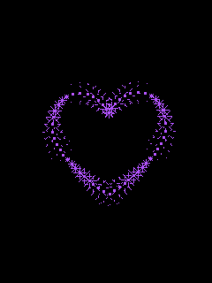

GIF — популярный растровый формат графических изображений.
Способен хранить сжатые данные без потери качества в формате не более 256 цветов.
Не зависящий от аппаратного обеспечения формат GIF был разработан в 1987 году (GIF87a) фирмой CompuServe для передачи растровых изображений по сетям.
В 1989-м формат был модифицирован (GIF89a), были добавлены поддержка прозрачности и анимации. GIF использует LZW-компрессию, что позволяет сжимать файлы,
в которых много однородных заливок (логотипы, надписи, схемы). Долгое время GIF был одним из наиболее распространённых форматов в интернете.
Формат GIF поддерживает анимационные изображения. Они представляют собой последовательность из нескольких статичных кадров,
а также информацию о том, сколько времени каждый кадр должен быть показан на экране. Анимацию можно сделать цикличной (англ. loop),
тогда вслед за последним кадром начнётся воспроизведение первого кадра и т. д. GIF-анимация может использовать прозрачность для того,
чтобы не сохранять очередной кадр целиком, а только изменения относительно предыдущего.
Недокументированной, но поддерживаемой возможностью является сохранение большего количества цветов с помощью анимированного GIF с нулевой задержкой между кадрами.
При этом преодолевается ограничение в 256 цветов: каждый кадр содержит свою палитру